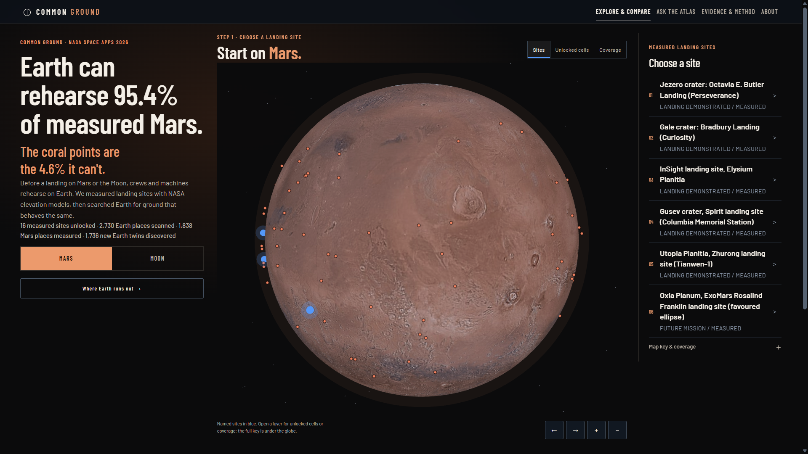
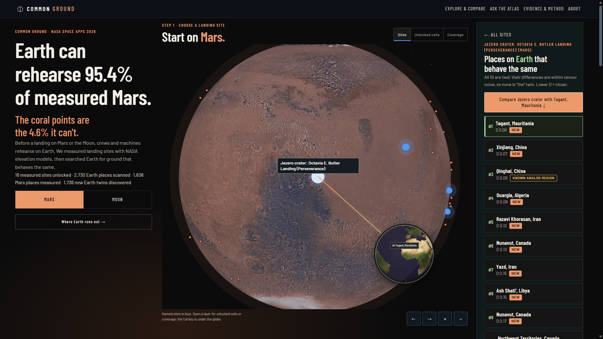
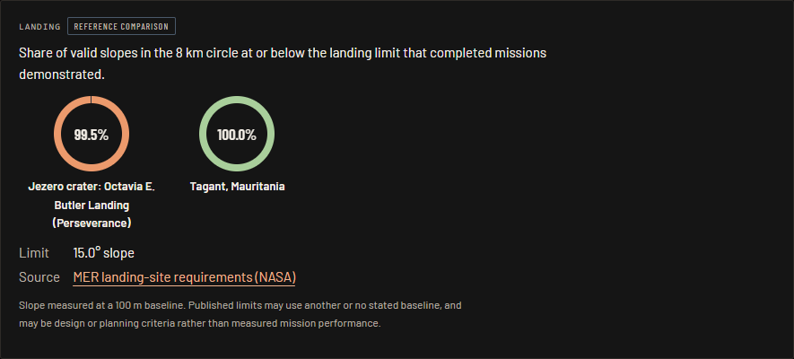
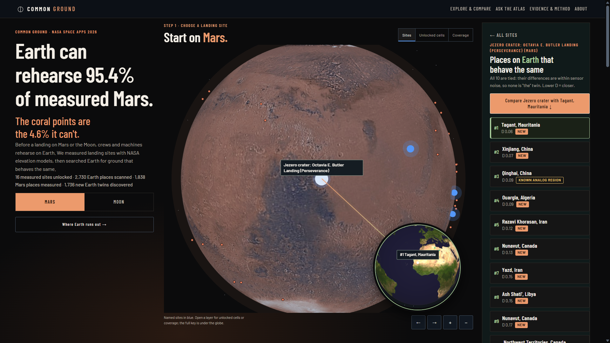
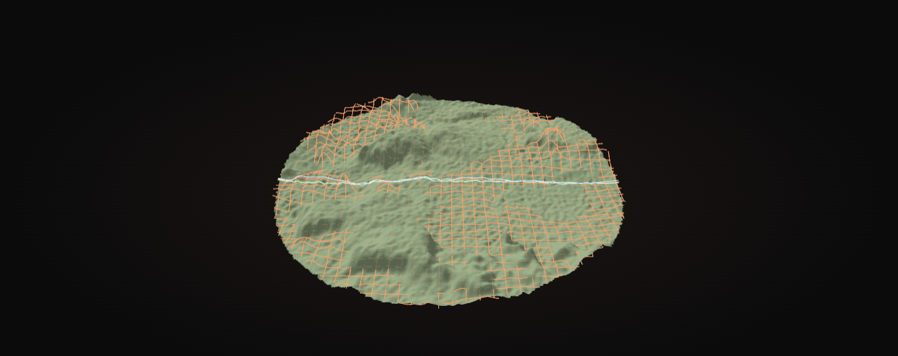
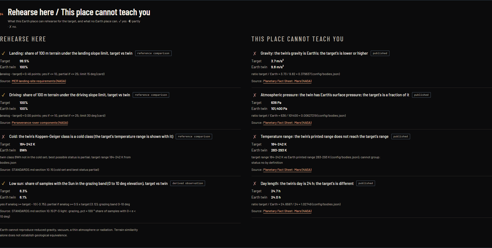
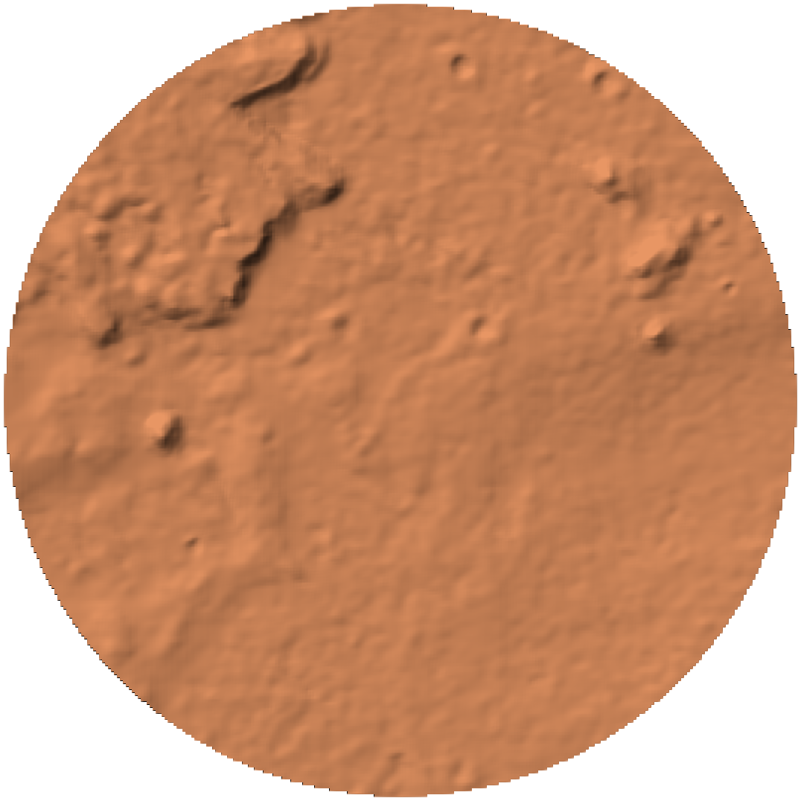
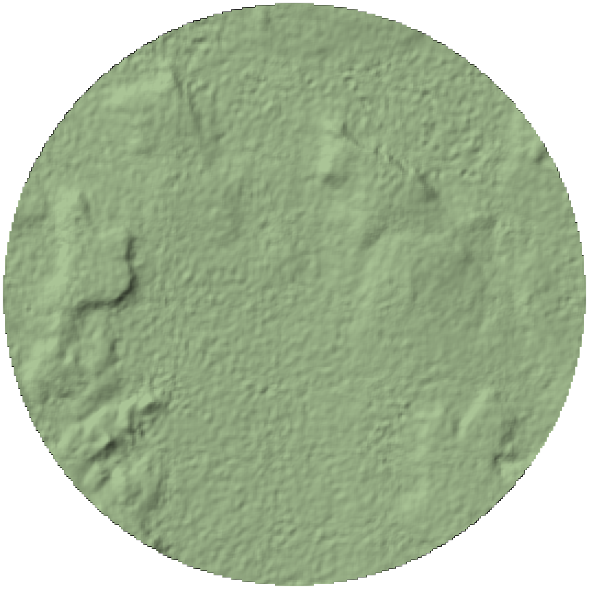

Mission planning
A crew is preparing to land at Jezero crater, Mars.


Step 1 · Measure the landing ground
99.5% of the site is within the 15° landing limit.

Step 2 · Find the same ground on Earth
Common Ground finds it in Tagant, Mauritania.


Step 3 · Compare, then rehearse
Same steepness: 6.8° on Mars, 6.6° on Earth.
Rehearse here / cannot teach you
They practise landing and driving there. Gravity and pressure, they plan another way.


Steeper than the 15° landing limit (NASA CTX relief)

Rehearsed at Tagant, Mauritania
Dramatization
Landing day
They have already practised on this ground.
TOUCHDOWN.
Landed inside the ground they rehearsed.
COMMON GROUND
Rehearse Mars and the Moon on Earth.
Data: NASA MRO CTX (USGS) · NASADEM · LRO LOLA & LROC · ESA Copernicus DEM
NASA Space Apps Challenge 2026 · Dramatization of the intended use